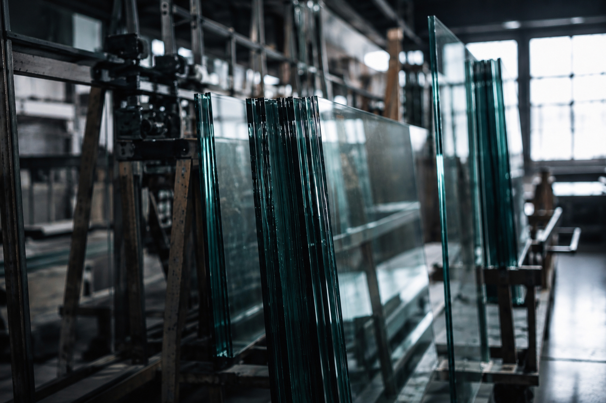
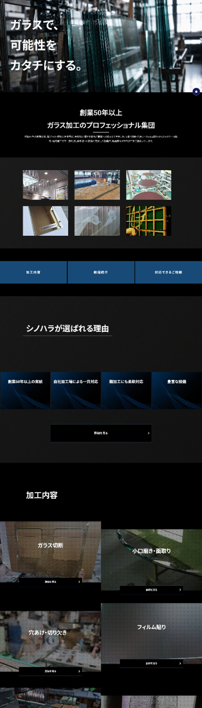
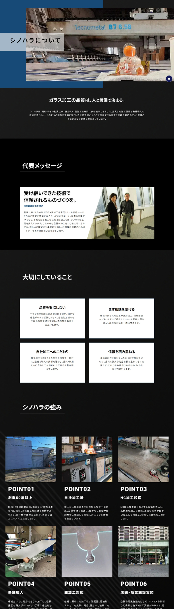
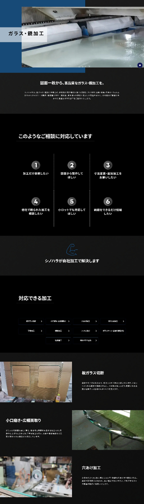
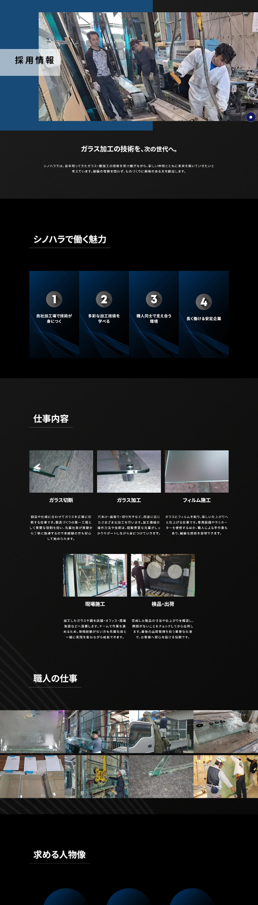

担当範囲
ワイヤーフレーム設計 / デザイン
外注様へコーディング指示
ライティング

ワイヤーフレーム設計 / デザイン
外注様へコーディング指示
ライティング
法人からの新規問い合わせ増加
採用情報の強化
約1ヶ月
Figma / Photoshop
HTML / CSS / JavaScript
自社加工場に備えた充実した設備と、長年の経験を持つ職人の技術を軸に、法人のお客様から「安心して加工を任せられる会社」と感じていただけるサイトを目指しました。 切断・研磨・穴あけ・フィルム貼りなどの幅広い加工技術はもちろん、他社で対応が難しい加工や追加加工にも向き合う柔軟な対応力を分かりやすく整理。実際の加工風景や設備、職人の姿を大きく見せることで、ものづくりを視覚的にも伝えています。
創業50年以上にわたり、ガラス・鏡加工の技術を培ってきたその長い歴史による「信頼」と、自社加工場・充実した設備・熟練職人によって生み出される「確かな技術力」を視覚的に伝えるデザインを目指しました。 サイト全体は、一般的なガラス関連企業で多く見られる白や水色を中心とした爽やかな表現ではなく、ブラックやチャコールグレーを基調とした、重厚感のあるカラーリングを採用しています。 ガラスそのものの透明感を色で表現するのではなく、写真に映る光や反射、ガラスのエッジ、加工設備の質感などを活かすことで、企業様ならではの「ものづくりの現場」を印象的に見せています。
COLOR
#1D1F21#5F666D#184A78#C9CED3TYPOGRAPHY
AaNoto Sans JP
可読性の高い書体を採用。




強みである、自社加工場・NC加工機をはじめとした充実した設備と、創業50年以上の中で培われてきた職人の技術。
切断・研磨・穴あけ・フィルム貼りなどの対応加工を具体的に整理するとともに、図面からの相談、短納期、追加・再加工、他社で対応が難しかった案件への柔軟な対応力も訴求。
一般的なガラス関連企業に多い白や水色を中心とした表現ではなく、ブラック・チャコールグレーを基調とした重厚でシャープなデザインを採用。